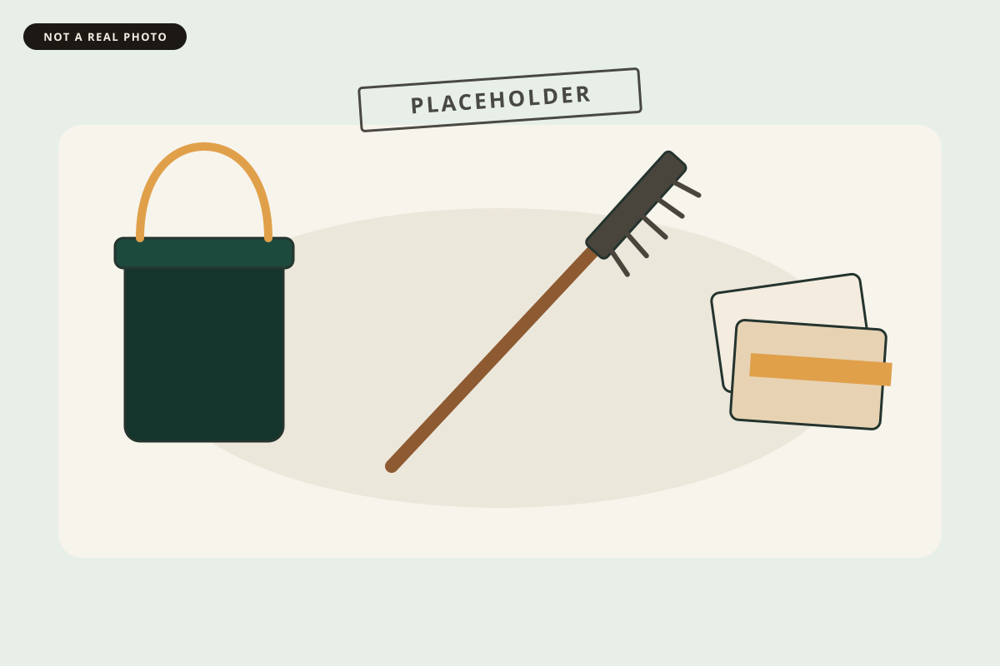

Acme Everything
Scroll reveal
They arrive as you scroll.
Cards and images ease in with a CSS view timeline. If the browser cannot do that, or motion is reduced, they are simply here. Nothing on this page is a review or a finished job.
Three placeholder steps
-
01
Write it down
Placeholder. Say what the visit is for, in the owner’s words.
-
02
Do the work
Placeholder. Name the actual task. Leave out any claim you cannot prove.
-
03
Leave it clear
Placeholder. Say what the owner has in hand when you leave.
Images, same idea



Two more, lower on the page
-
04
Keep the type still
Headings on this page do not move. Only the cards and the pictures do, and only with opacity and transform, so the layout does not jump.
-
05
Leave a way out
Reduced motion turns the effect off. So does a browser that does not understand view timelines, unless you keep the optional script.
End of the demo. Scroll back up. The blocks you already passed stay visible.